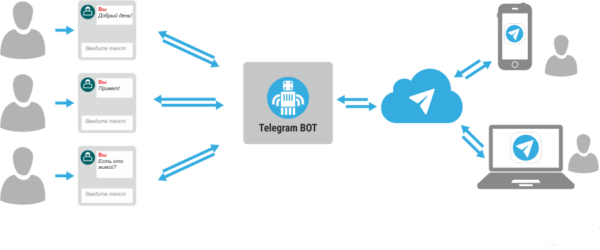

Perché gli scrittori dovrebbero prendere in considerazione Telegram per diffondere nuovi racconti
Di certo conoscete Telegram, applicazione di messaggistica istantanea lanciata nel 2013 dal Russo Pavel Durov, che oggi conta 100 milioni di utenti attivi. Diretta concorrente di Whatsapp, Telegram basa i suoi servizi sul cloud, ovvero, permette di accedere ai propri messaggi tramite qualsiasi dispositivo sincronizzato, compresi tablet e computer, e condividere contenuti (gif, doc, zip, mp3, mp4) con dimensioni fino a 1,5 GB per ogni file.
Perché gli scrittori dovrebbero tenere d’occhio questa applicazione? E’ presto detto: Telegram da ai suoi utenti la possibilità di attivare dei canali pubblici di comunicazione, che possono avere un numero illimitato di membri e sono rintracciabili tramite un url personalizzato (telegram.me/nomecanale). E’ possibile condividere questo link tramite social network, blog e siti web, il che offre ad ogni scrittore l’occasione non solo di allargare la propria audience, ma di raggiungere i lettori nella loro quotidianità, costruendo così un rapporto ad un livello molto più intimo.
“Sincronizzare in modo più potente il tempo mediale con quello di vita”, come spiega perfettamente Giovanni Boccia Artieri. “Posso cercare di sintonizzarmi con i tempi dei miei pubblici richiedendo la loro attenzione nei momenti che immagino di pausa o di bisogno”.
Si potrebbe pensare, quindi, ad una narrazione serializzata, attraverso brevi messaggi, che ogni membro del canale riceve sul proprio smartphon a delle ore ben precise del giorno. Sopratutto si potrebbero sperimentare nuovi linguaggi, così come è già accaduto su Twitter, integrando nella scrittura menzioni, hashtag, emoticon, oltre a contenuti audio e video.
Ogni messaggio in un canale ha un contatore delle visualizzazioni, in questo modo è possibile anche testare l’efficacia della propria narrazione. Unica pecca è l’impossibilità di ricevere feedback dai membri del canale, ma questa mancanza si potrebbe sopperire grazie ai Bot.

Come abbiamo visto, questi sono dei programmi in grado di interagire in modo autonomo con gli utenti. I Bot di Telegram possono:
- Inviare notifiche personalizzate — vedi @TechCrunchBot
- Arricchire le chat con contenuti di terze parti — vedi GIF bot, Music bot, Youtube bot
- Creare giochi interattivi — vedi @Trivia Bot
- Connettere persone sulla base di interessi comuni — vedi @HotOrBot
Per creare un bot su Telegram è necessario richiamare il BotFather e seguire le sue istruzioni per attivare il token di autorizzazione. Il nome della vostra applicazione dovrà terminare sempre con la dicitura ‘bot’ (abbiamo visto @TriviaBot , @TechCrunchBot, ecc…).
Per abilitare l’opzione inline, ovvero per creare un bot che possa essere richiamato direttamente dal campo di immissione di testo in qualsiasi chat, è necessario inviare il comando ‘/setinline’ e fornire al BotFather la descrizione che l’utente vedrà nel campo di input, dopo aver digitato il nome del bot.
Gli utenti possono condividere i contenuti ricevuti dal bot all’interno di qualsiasi chat, gruppo o canale. Per sapere quale dei risultati è tra i più diffusi bisognerà inviare al Botfather il comando ‘/setinlinefeedback’. Con questa opzione abilitata, si riceveranno gli aggiornamenti sui risultati scelti dagli utenti.
Allora, userete Telegram come canale per diffondere i vostri prossimi racconti?